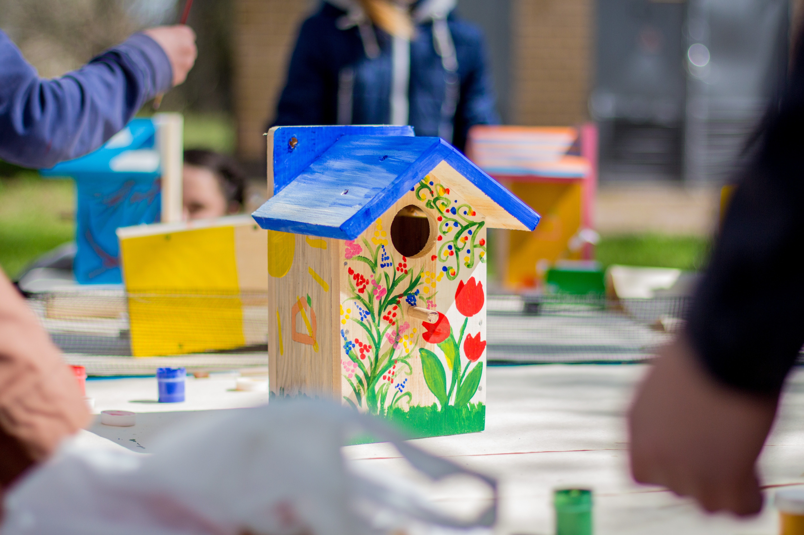

Gather Materials: Collect all the materials and tools you'll
need for building the birdhouse.
Design the Birdhouse: Decide on the dimensions and design of
your birdhouse. A simple design could include a rectangular box with a
slanted roof. A typical birdhouse could have dimensions of
approximately 6x6x8 inches.
Cut the Wood: Using a saw, cut the 1x6 inch wood board into the
necessary pieces: two sides, a front, a back, a bottom, and a roof.
Sand the Edges: Use sandpaper to smooth out the edges of the
cut pieces to prevent splinters and ensure a neat finish.
Assemble the Box: Lay out the pieces to form the basic box
shape. Apply wood glue to the edges of the sides, front, and back,
then carefully attach them. Use clamps to hold the pieces in place
while the glue dries. You can also reinforce the joints with nails or
screws.
Attach the Bottom: Apply wood glue to the bottom edges of the
box and attach the bottom piece. Secure it with nails or screws for
extra stability.
Add the Roof: Attach the roof piece to the top of the box. Make
sure it overhangs the front of the box slightly to provide some
protection from rain. Secure it with nails or screws.
Drill the Entry Hole: Depending on the type of birds you want
to attract, drill a hole near the top of the front piece for the entry
hole. Different bird species have different preferences for entry hole
size.
Decorate and Paint (Optional): If desired, you can add some
decorative elements to the birdhouse. Make sure to use bird-safe paint
and finishes.
Attach a Hanger: Screw or nail a small piece of wood to the top
back of the birdhouse to create a hanger. This will allow you to hang
the birdhouse from a tree branch, hook, or post.
Install the Birdhouse: Find a suitable location for your
birdhouse. Make sure it's in a quiet and somewhat sheltered area, away
from heavy human activity and potential predators.
Enjoy Watching the Birds: Once the birdhouse is securely hung,
all that's left to do is wait and enjoy watching the birds that might
choose to make it their home.

Tips:
Research the types of birds in your area to design the birdhouse to
their preferences.
Avoid using pressure-treated wood or toxic finishes that could be
harmful to birds.
Clean out the birdhouse at the end of each nesting season to prepare
for the next year's inhabitants.
photo 1: Unsplash photo by Harry Cornu-Atkins
photo 2: Unsplash photo by Bailey Alexander
photo 3: Unsplash photo by Lubomirkin